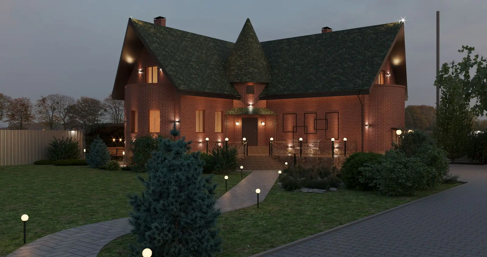
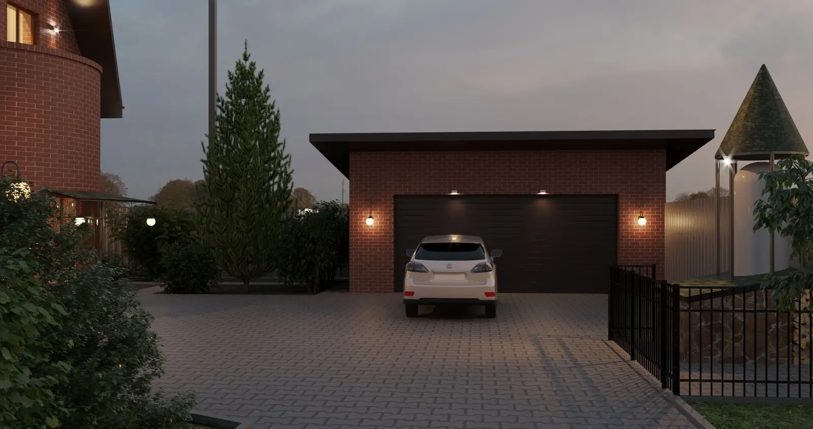
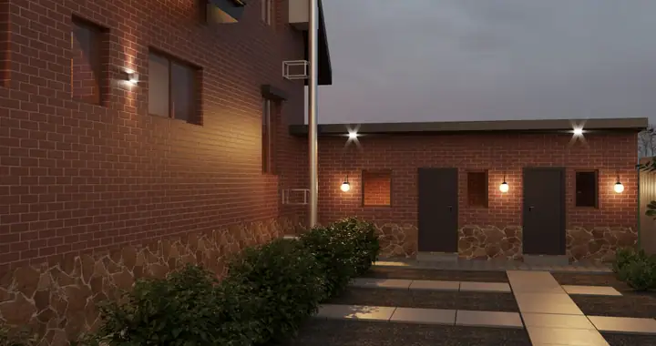
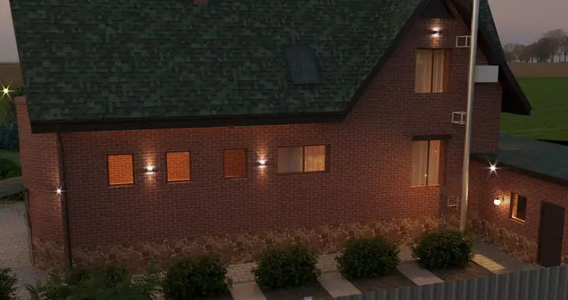
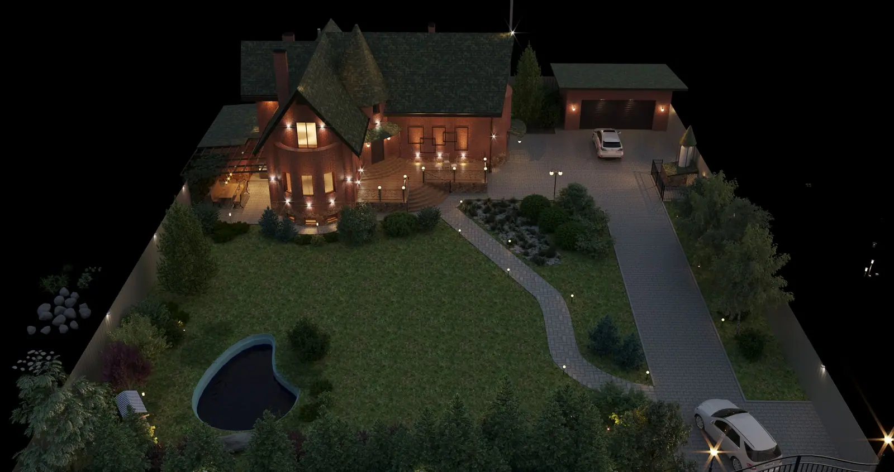
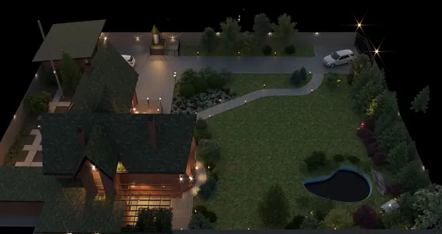
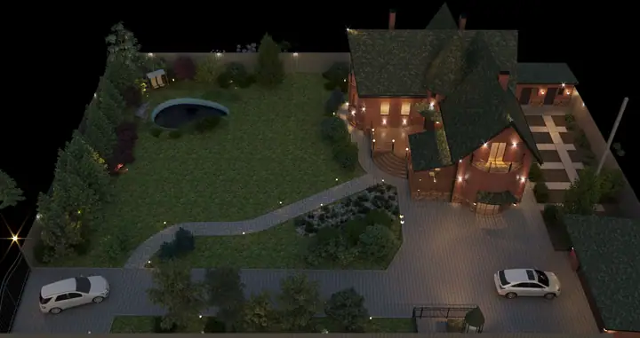
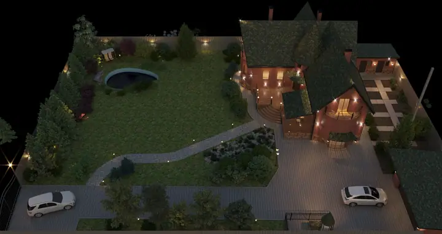
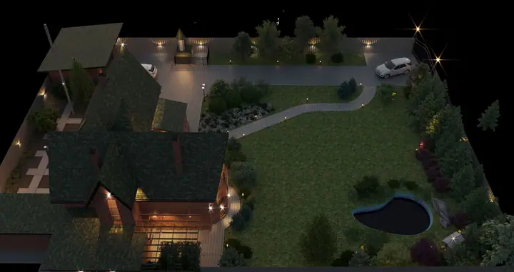
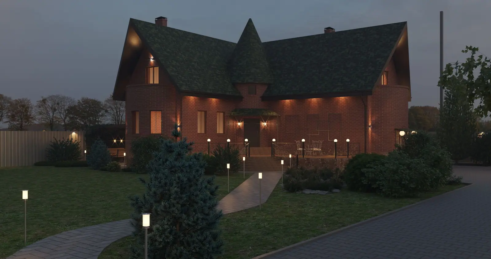
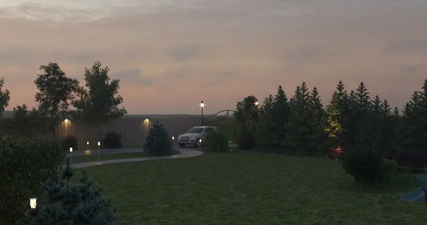
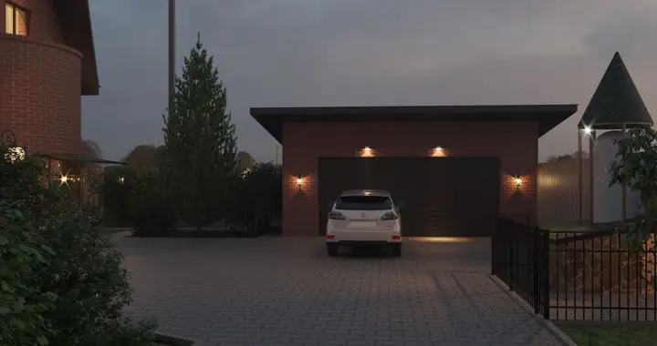
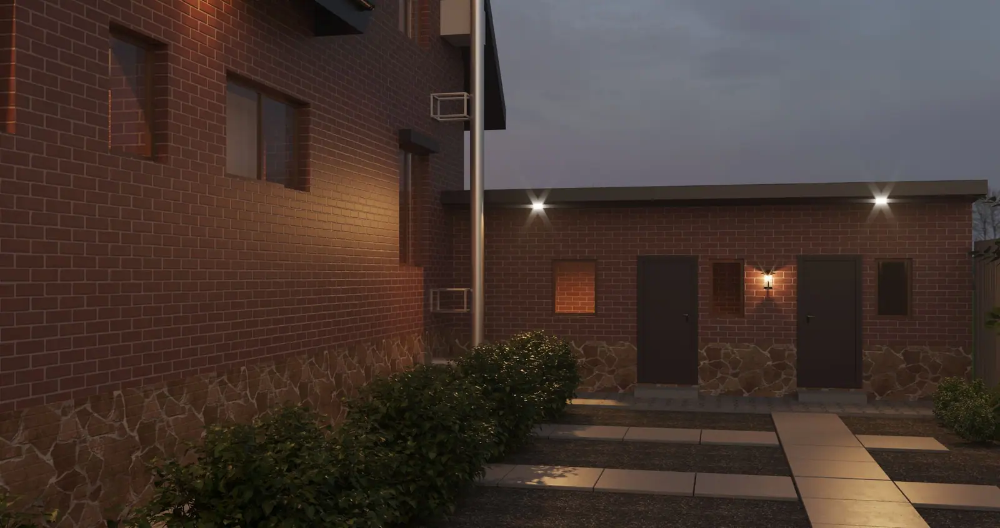
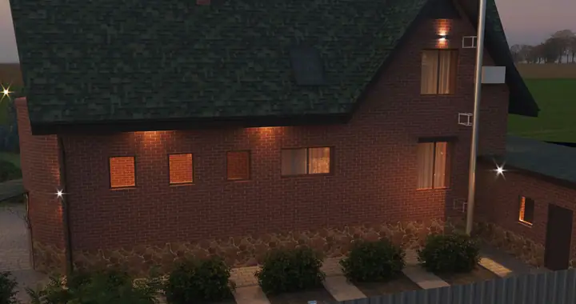
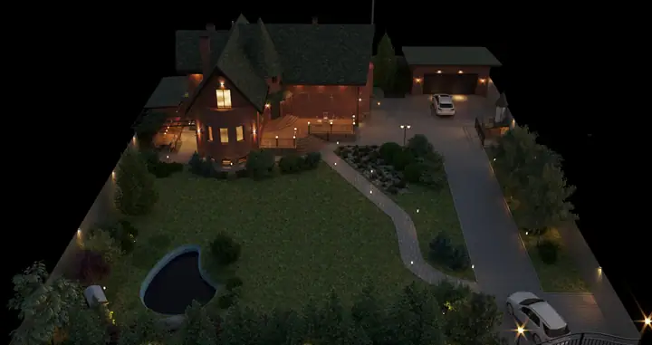
Сайт использует cookie, чтобы корректно работать, показывать встроенную карту и собирать обезличенную статистику посещений через Яндекс Метрику. Подробнее — в политике конфиденциальности.